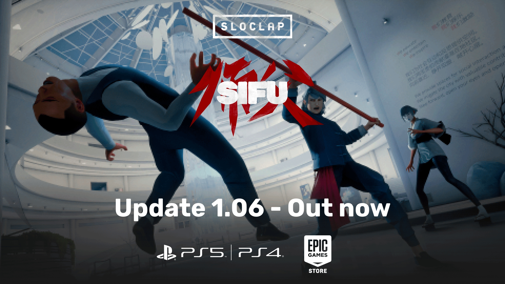

Основные изменения:
Дизайн:
- Полировка и исправления. Небольшие доработки на втором уровне
- Исправление ошибок для второго (Шон) и третьего (Куроки) боссов
Код:
- Глобальные оптимизации - Исправления ошибок.
Визуал и освещение:
- Улучшение производительности на всех уровнях
- Польский язык и исправления